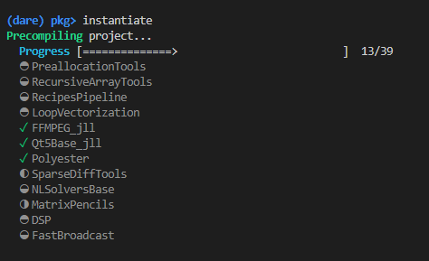

Contributing
Feel free to give feedback and/or contribute to the toolbox! Contributions are welcome, and they are greatly appreciated! Every little bit helps, and credit will always be given. You can contribute in many ways:
Types of Contributions
Report Bugs
Report bugs at https://github.com/upb-lea/ElectricGrid.jl/issues. If you are reporting a bug, please include:
- Your operating system name and version.
- Any details about your local setup that might be helpful in troubleshooting.
- Detailed steps to reproduce the bug.
Fix Bugs
Look through the GitHub issues for bugs. Anything tagged with "bug" and "help wanted" is open to whoever wants to implement it.
Implement Features
Look through the GitHub issues for features. Anything tagged with "enhancement" and "help wanted" is open to whoever wants to implement it.
Write Documentation
ElectricGrid.jl could always use more documentation, wheather as part of the official ElectricGrid.jl docs, in markdown, or even on the web in blog posts, articles, and such.
Submit Feedback
The best way to send feedback is to file an issue at https://github.com/upb-lea/ElectricGrid.jl/issues. If you are proposing a feature:
- Explain in detail how it would work.
- Keep the scope as narrow as possible, to make it easier to implement.
- Remember that this is a volunteer-driven project, and that contributions are welcome :)
Useful hints for developers
Instantiating and managing the "ElectricGrid" julia environment
Setting up the project with VSCode
It's recommended to work in this project with Visual Studio Code.
- In VSCode, use "Open Folder" and select the "ElectricGrid" folder that contains the
Project.toml. This way, VSCode should automatically recognize the julia environment calledElectricGrid- or it should ask you for selecting an environment andpath/to/ElectricGridwill be in the list to choose. - Open a new terminal - it should start in the "ElectricGrid" folder. Then start julia in it (the command is just
juliaif you included it in your systems PATH variable). Now, type]to access the package manager (the prompt color switches from green to blue) and then runactivate .(with the dot). The project gets activated and it shows the name in the brackets.

Afterwards, run instantiate. A progress starts that automatically installs all the needed packages for the julia environment called ElectricGrid.

It gets the information about the required packages from the Project.toml and creates a new file called Manifest.toml which stores information about all the installed sub-dependencies of these packages. Manifest.toml might be different from machine to machine and therefore is a local file that is also excluded from the git via the .gitignore file.
- Now, if you "Execute active File in REPL" it should automatically activate the project before running the file.

It might take some time to precompile packages (which is only done once as long as package versions don't change) and also to precompile parts of your code (which has to be done any time you run in a new REPL).
Adding, removing or changing packages in development
- To add a package to the
ElectricGridenvironment while developing, go to an active julia console, access the package manager with], make sure theElectricGridenvironment is activated (Important! Instructions in the paragraph above) and then runadd PackageName.

The julia package manager (which is called Pkg) then automatically adds the package to the Project.toml so the information gets stored in the git.
- To remove a package repeat the instructions above but instead of the
addcommand useremove(orrm, which is an alias).

- If you want to use a specific version of a package, use
add PackageName@versionnumber.

Previously used versions of the package will get overwritten (in the .toml files, not on your disk). If you want the newest version thats on github, which has no release number yet, you can use add PackageName#master (this way you can also add a specific branch). If you want to add a specific fork of a package or a package that is not officially registered in Pkg, you can also use add https://github.com/path/to/package.git.
- If you pulled changes from the git and need to update your
ElectricGridenvironment according to the updatedProject.toml, just access Pkg, make sure theElectricGridenvironment is activated, and runinstantiate.
Do not use update for that. update will try to update every package to the newest version and will also overwrite the Project.toml. While this is fine in most cases, it might break things if there are changes in the package structures that our code relies on. We will try to run update in the development branch itself from time to time in the course of the project.
How to fix a broken environment
Sometimes you can end up with a messed up environment which should generally be no problem and easy to fix. Here are some things to try:
- Delete your
Manifest.tomland runinstantiateagain. TheManifest.tomlwill be freshly regenerated. - Run
precompilein Pkg mode. - If you get an error about some libraries that may be "fundamentally broken", open your ".julia" directory (in windows it is usually at
C:\Users\YourName\.juliaand delete the problematic packages from the "packages" and "compiled" folder. After that, runinstantiateagain. The packages will be re-installed.